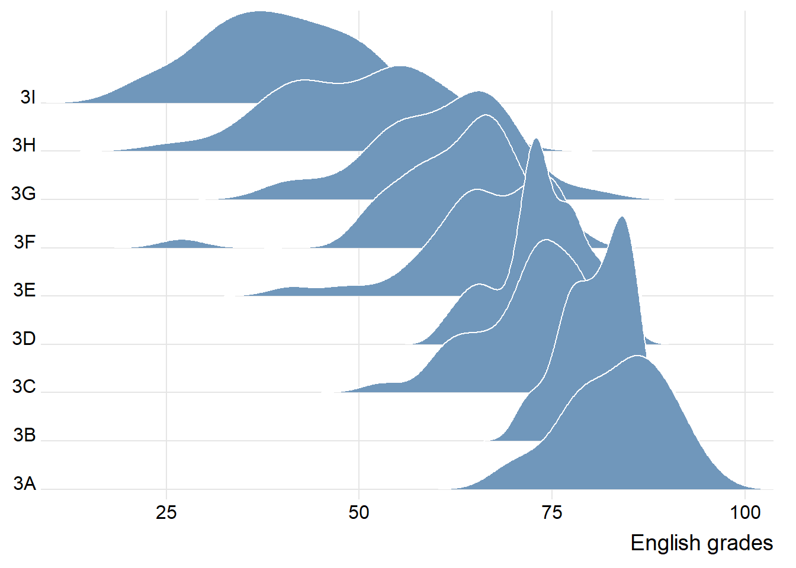
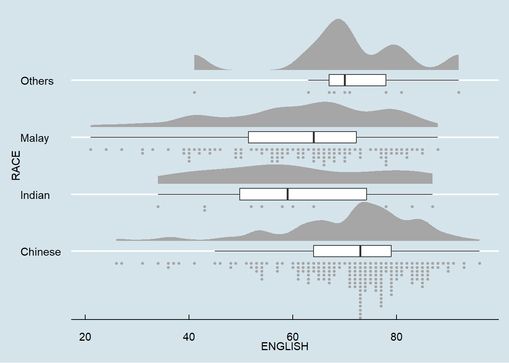

pacman::p_load(ggdist, ggridges, ggthemes,
colorspace, tidyverse)Hands-on Exercise 4.1: Visualising Distribution
1.0 Getting Started
1.1 Installing and Loading the Packages
The following R packages will be used in this exercise:
| R Package | Description |
|---|---|
ggridges |
For plotting ridgeline plots. |
ggdist |
For visualising distribution and uncertainty. |
tidyverse |
|
ggthemes |
Provides additional themes, scales, and geoms for ggplots package. |
colorspace |
For selecting individual colors or color palettes and employing them in various kinds of visualisations. |
The following code chunk will be used to load these packages into R:
1.2 Data Import
The code chunk below uses read_csv( ) to import exam_data.csv into R and save it into a tibble data frame:
exam <- read_csv("data/Exam_data.csv")2.0 Visualising Distribution with Ridgeline Plot
A ridgeline plot is used to reveal the distribution of a numeric value for several groups. The distribution can be represented using histograms or density plots, with all plots aligned to the same horizontal scale.
Ridgeline plots are used when the number of groups represented is medium to high (>5). Presenting these groups via window separation would take too much space.
It also works well when there is a clear pattern in the result, i.e. obvious ranking in the groups.
2.1 Plotting Ridgeline Graphs: ggridges Method
Main Geoms Used to Plot Ridgeline Plots: geom_ridgeline( ) and geom_density_ridges( ).
2.1.1 Using geom_density_ridges( )
ggplot(exam,
aes(x = ENGLISH,
y = CLASS)) +
geom_density_ridges(
scale = 3,
rel_min_height = 0.01,
bandwidth = 3.4,
fill = lighten("#7097BB", .3),
color = "white"
) +
scale_x_continuous(
name = "English grades",
expand = c(0, 0)
) +
scale_y_discrete(name = NULL, expand = expansion(add = c(0.2, 2.6))) +
theme_ridges()
2.1.2 Using geom_ridgeline()
exam_dens <- do.call(rbind, lapply(split(exam, exam$CLASS), function(df) {
dens <- density(df$ENGLISH, adjust = 0.9) # Change the adjust parameter to control how detailed the density estimates are.
data.frame(ENGLISH = dens$x, density = dens$y, CLASS = unique(df$CLASS))
}))
ggplot(exam_dens, aes(x = ENGLISH, y = CLASS, height = density, group = CLASS)) +
geom_ridgeline(
scale = 50, # Adjust the scale variable to change overlap and height of ridges.
fill = "#7097BB",
color = "white"
) +
scale_x_continuous(
name = "English grades",
expand = c(0, 0)
) +
scale_y_discrete(
name = NULL,
expand = expansion(add = c(0.1, 0.1))
) +
theme_ridges()
Note
geom_ridgeline()requires an explicitly providedheightaesthetic, which is set to the manually calculated density.geom_density_ridges()does not seem to require any pre-processing steps for density calculation. Density estimation is handled internally by thegeom_density_ridges()function.
2.2 Varying Fill Colours Along the X-Axis
This can be achieved via geom_ridgeline_gradient() or geom_density_ridges_gradient().
2.2.1 Using geom_density_ridges_gradient()
ggplot(exam,
aes(x = ENGLISH,
y = CLASS,
fill = stat(x))) +
geom_density_ridges_gradient(
scale = 3,
rel_min_height = 0.01) +
scale_fill_viridis_c(name = "Temp. [F]",
option = "C") +
scale_x_continuous(
name = "English grades",
expand = c(0, 0)
) +
scale_y_discrete(name = NULL, expand = expansion(add = c(0.2, 2.6))) +
theme_ridges()
2.3 Mapping the Probabilities Directly onto Colour
ggplot(exam,
aes(x = ENGLISH,
y = CLASS,
fill = 0.5 - abs(0.5-stat(ecdf)))) +
stat_density_ridges(geom = "density_ridges_gradient",
calc_ecdf = TRUE) +
scale_fill_viridis_c(name = "Tail probability",
direction = -1) +
theme_ridges()
2.4 Ridgeline Plots with Quantile Lines
ggplot(exam,
aes(x = ENGLISH,
y = CLASS,
fill = factor(stat(quantile))
)) +
stat_density_ridges(
geom = "density_ridges_gradient",
calc_ecdf = TRUE,
quantiles = 4,
quantile_lines = TRUE) +
scale_fill_viridis_d(name = "Quartiles") +
theme_ridges()
Alternatively, cut-off points can also be specified as shown in the code chunk below:
ggplot(exam,
aes(x = ENGLISH,
y = CLASS,
fill = factor(stat(quantile))
)) +
stat_density_ridges(
geom = "density_ridges_gradient",
calc_ecdf = TRUE,
quantiles = c(0.025, 0.975)
) +
scale_fill_manual(
name = "Probability",
values = c("#FF0000A0", "#A0A0A0A0", "#0000FFA0"),
labels = c("(0, 0.025]", "(0.025, 0.975]", "(0.975, 1]")
) +
theme_ridges()
3.0 Visualising Distribution with a Raincloud Plot
Raincloud plots produces a half-density to a distribution plot. While the boxplot does not show where densities are clustered, the raincloud plot does.
3.1. Plotting a Half Eye Graph
ggplot(exam,
aes(x = RACE,
y = ENGLISH)) +
stat_halfeye(adjust = 0.5,
justification = -0.2,
.width = 0,
point_colour = NA)
3.2 Adding the Boxplot with geom_boxplot( )
ggplot(exam,
aes(x = RACE,
y = ENGLISH)) +
stat_halfeye(adjust = 0.5,
justification = -0.2,
.width = 0,
point_colour = NA) +
geom_boxplot(width = .20,
outlier.shape = NA)
3.3 Adding the Dot Plots with stat_dots( )
ggplot(exam,
aes(x = RACE,
y = ENGLISH)) +
stat_halfeye(adjust = 0.5,
justification = -0.2,
.width = 0,
point_colour = NA) +
geom_boxplot(width = .20,
outlier.shape = NA) +
stat_dots(side = "left",
justification = 1.2,
binwidth = .5,
dotsize = 2)
3.4 Finishing Touch - Flipping the Plot Horizontally
ggplot(exam,
aes(x = RACE,
y = ENGLISH)) +
stat_halfeye(adjust = 0.5,
justification = -0.2,
.width = 0,
point_colour = NA) +
geom_boxplot(width = .20,
outlier.shape = NA) +
stat_dots(side = "left",
justification = 1.2,
binwidth = .5,
dotsize = 1.5) +
coord_flip() +
theme_economist()
4.0 References
Claus O. Wilke Fundamentals of Data Visualization especially Chapter 6, 7, 8, 9 and 10.
Allen M, Poggiali D, Whitaker K et al. “Raincloud plots: a multi-platform tool for robust data. visualization” [version 2; peer review: 2 approved]. Welcome Open Res 2021, pp. 4:63.
4.1 Disclaimer
This document includes content written with the assistance of ChatGPT, which was used for grammar correction, correction of code and the explanation of arguments for the various packages.
Hands-on Exercise 4.1: Visualising Distribution – ISSS608 Coursework Hands-on Exercise 4.1: Visualising Distribution – ISSS608 Coursework Hands-on Exercise 4.1: Visualising Distribution – ISSS608 Coursework ISSS608 Coursework